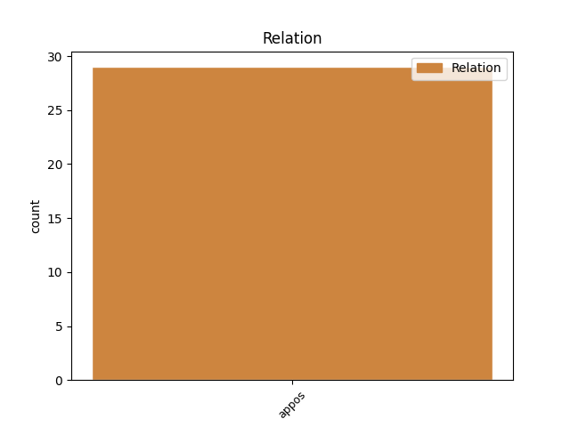
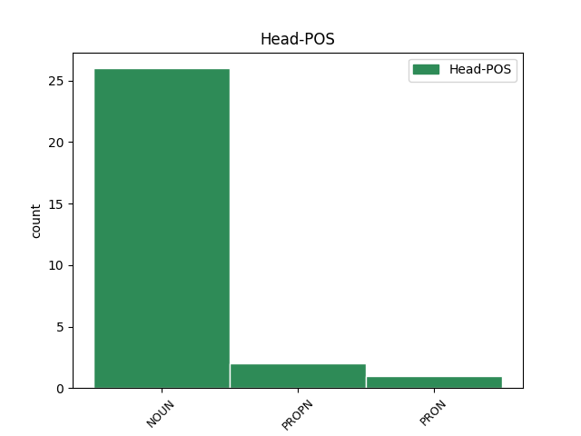
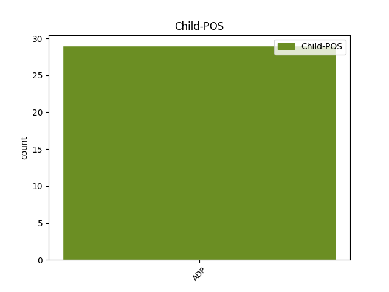

Distribution of features within this leaf



Agreement Rules sorted by frequency.
- When the dependent token is the appositional modifier(appos) of the head token, and the head token is NOUN and the dependent token is ADP.
1 Máša _ _ _ _ 0 _ _ _
2 nerozhodně _ _ _ _ 0 _ _ _
3 vstává _ _ _ _ 0 _ _ _
4 a _ _ _ _ 0 _ _ _
5 očima _ _ _ _ 0 _ _ _
6 hledá _ _ _ _ 0 _ _ _
7 Láďu _ _ _ _ 0 _ _ _
8 , _ _ _ _ 0 _ _ _
9 střetá _ _ _ _ 0 _ _ _
10 se _ _ _ _ 0 _ _ _
11 s _ _ _ _ 0 _ _ _
12 ním _ _ _ _ 0 _ _ _
13 , _ _ _ _ 0 _ _ _
14 na _ _ _ _ 0 _ _ _
15 okamžik okamžik NOUN NNIS4-----A---- Animacy=Inan|Case=Acc|Gender=Masc|Number=Sing|Polarity=Pos 0 _ _ _
16 , _ _ _ _ 0 _ _ _
17 na na ADP RR--4---------- AdpType=Prep|Case=Acc 15 appos _ _
18 kratičkou _ _ _ _ 0 _ _ _
19 vteřinu _ _ _ _ 0 _ _ _
20 , _ _ _ _ 0 _ _ _
21 možná _ _ _ _ 0 _ _ _
22 na _ _ _ _ 0 _ _ _
23 dvě _ _ _ _ 0 _ _ _
24 . _ _ _ _ 0 _ _ _
1 Už _ _ _ _ 0 _ _ _
2 jsme _ _ _ _ 0 _ _ _
3 si _ _ _ _ 0 _ _ _
4 na _ _ _ _ 0 _ _ _
5 něj on PRON P5MS4--3------- Animacy=Anim|Case=Acc|Gender=Masc|Number=Sing|Person=3|PrepCase=Pre|PronType=Prs 0 _ _ _
6 zvykli _ _ _ _ 0 _ _ _
7 , _ _ _ _ 0 _ _ _
8 na na ADP RR--4---------- AdpType=Prep|Case=Acc 5 appos _ _
9 to _ _ _ _ 0 _ _ _
10 velké _ _ _ _ 0 _ _ _
11 bezbranné _ _ _ _ 0 _ _ _
12 dítě _ _ _ _ 0 _ _ _
13 , _ _ _ _ 0 _ _ _
14 vyplašené _ _ _ _ 0 _ _ _
15 zvířátko _ _ _ _ 0 _ _ _
16 . _ _ _ _ 0 _ _ _
1 Ocitli _ _ _ _ 0 _ _ _
2 jsme _ _ _ _ 0 _ _ _
3 se _ _ _ _ 0 _ _ _
4 v _ _ _ _ 0 _ _ _
5 proslulé _ _ _ _ 0 _ _ _
6 Pečkárně Pečkárna PROPN NNFS6-----A---- Case=Loc|Gender=Fem|NameType=Geo|Number=Sing|Polarity=Pos 0 _ _ _
7 , _ _ _ _ 0 _ _ _
8 v v ADP RR--6---------- AdpType=Prep|Case=Loc 6 appos _ _
9 budově _ _ _ _ 0 _ _ _
10 , _ _ _ _ 0 _ _ _
11 která _ _ _ _ 0 _ _ _
12 na _ _ _ _ 0 _ _ _
13 mě _ _ _ _ 0 _ _ _
14 působila _ _ _ _ 0 _ _ _
15 hrozivěji _ _ _ _ 0 _ _ _
16 a _ _ _ _ 0 _ _ _
17 depresivněji _ _ _ _ 0 _ _ _
18 než _ _ _ _ 0 _ _ _
19 cokoli _ _ _ _ 0 _ _ _
20 , _ _ _ _ 0 _ _ _
21 co _ _ _ _ 0 _ _ _
22 jsem _ _ _ _ 0 _ _ _
23 do _ _ _ _ 0 _ _ _
24 té _ _ _ _ 0 _ _ _
25 doby _ _ _ _ 0 _ _ _
26 zažil _ _ _ _ 0 _ _ _
27 . _ _ _ _ 0 _ _ _
Disagree Examples:
1 Paní _ _ _ _ 0 _ _ _
2 A _ _ _ _ 0 _ _ _
3 . _ _ _ _ 0 _ _ _
4 C _ _ _ _ 0 _ _ _
5 . _ _ _ _ 0 _ _ _
6 ukázala _ _ _ _ 0 _ _ _
7 do _ _ _ _ 0 _ _ _
8 údolí _ _ _ _ 0 _ _ _
9 , _ _ _ _ 0 _ _ _
10 teď _ _ _ _ 0 _ _ _
11 už _ _ _ _ 0 _ _ _
12 bylo _ _ _ _ 0 _ _ _
13 vidět _ _ _ _ 0 _ _ _
14 na _ _ _ _ 0 _ _ _
15 jeho _ _ _ _ 0 _ _ _
16 konec konec NOUN NNIS4-----A---- Animacy=Inan|Case=Acc|Gender=Masc|Number=Sing|Polarity=Pos 0 _ _ _
17 , _ _ _ _ 0 _ _ _
18 k k ADP RR--3---------- AdpType=Prep|Case=Dat 16 appos _ _
19 řece _ _ _ _ 0 _ _ _
20 , _ _ _ _ 0 _ _ _
21 na _ _ _ _ 0 _ _ _
22 louce _ _ _ _ 0 _ _ _
23 tam _ _ _ _ 0 _ _ _
24 stála _ _ _ _ 0 _ _ _
25 košatá _ _ _ _ 0 _ _ _
26 lípa _ _ _ _ 0 _ _ _
27 . _ _ _ _ 0 _ _ _
1 S _ _ _ _ 0 _ _ _
2 Honzou _ _ _ _ 0 _ _ _
3 jsem _ _ _ _ 0 _ _ _
4 se _ _ _ _ 0 _ _ _
5 srazila _ _ _ _ 0 _ _ _
6 na _ _ _ _ 0 _ _ _
7 chodbě chodba NOUN NNFS6-----A---- Case=Loc|Gender=Fem|Number=Sing|Polarity=Pos 0 _ _ _
8 v _ _ _ _ 0 _ _ _
9 lázních _ _ _ _ 0 _ _ _
10 , _ _ _ _ 0 _ _ _
11 před před ADP RR--7---------- AdpType=Prep|Case=Ins 7 appos _ _
12 ordinací _ _ _ _ 0 _ _ _
13 doktorky _ _ _ _ 0 _ _ _
14 Pawlovské _ _ _ _ 0 _ _ _
15 . _ _ _ _ 0 _ _ _
1 A _ _ _ _ 0 _ _ _
2 jako _ _ _ _ 0 _ _ _
3 každé _ _ _ _ 0 _ _ _
4 ráno ráno NOUN NNNS4-----A---- Case=Acc|Gender=Neut|Number=Sing|Polarity=Pos 0 _ _ _
5 : _ _ _ _ 0 _ _ _
6 nejdřív _ _ _ _ 0 _ _ _
7 s s ADP RR--7---------- AdpType=Prep|Case=Ins 4 appos _ _
8 Veronikou _ _ _ _ 0 _ _ _
9 do _ _ _ _ 0 _ _ _
10 školky _ _ _ _ 0 _ _ _
11 . _ _ _ _ 0 _ _ _
1 A _ _ _ _ 0 _ _ _
2 jako _ _ _ _ 0 _ _ _
3 každé _ _ _ _ 0 _ _ _
4 ráno ráno NOUN NNNS4-----A---- Case=Acc|Gender=Neut|Number=Sing|Polarity=Pos 0 _ _ _
5 : _ _ _ _ 0 _ _ _
6 nejdřív _ _ _ _ 0 _ _ _
7 s _ _ _ _ 0 _ _ _
8 Veronikou _ _ _ _ 0 _ _ _
9 do do ADP RR--2---------- AdpType=Prep|Case=Gen 4 appos _ _
10 školky _ _ _ _ 0 _ _ _
11 . _ _ _ _ 0 _ _ _
1 Z _ _ _ _ 0 _ _ _
2 města _ _ _ _ 0 _ _ _
3 vyjel _ _ _ _ 0 _ _ _
4 Havlena _ _ _ _ 0 _ _ _
5 bez _ _ _ _ 0 _ _ _
6 dlouhého _ _ _ _ 0 _ _ _
7 bloudění _ _ _ _ 0 _ _ _
8 a _ _ _ _ 0 _ _ _
9 neomylně _ _ _ _ 0 _ _ _
10 si _ _ _ _ 0 _ _ _
11 to _ _ _ _ 0 _ _ _
12 namířil _ _ _ _ 0 _ _ _
13 správným _ _ _ _ 0 _ _ _
14 směrem směr NOUN NNIS7-----A---- Animacy=Inan|Case=Ins|Gender=Masc|Number=Sing|Polarity=Pos 0 _ _ _
15 , _ _ _ _ 0 _ _ _
16 k k ADP RR--3---------- AdpType=Prep|Case=Dat 14 appos _ _
17 zasněžené _ _ _ _ 0 _ _ _
18 zřícenině _ _ _ _ 0 _ _ _
19 na _ _ _ _ 0 _ _ _
20 kopci _ _ _ _ 0 _ _ _
21 , _ _ _ _ 0 _ _ _
22 která _ _ _ _ 0 _ _ _
23 dominovala _ _ _ _ 0 _ _ _
24 krajině _ _ _ _ 0 _ _ _
25 jako _ _ _ _ 0 _ _ _
26 maják _ _ _ _ 0 _ _ _
27 . _ _ _ _ 0 _ _ _